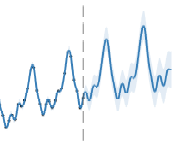
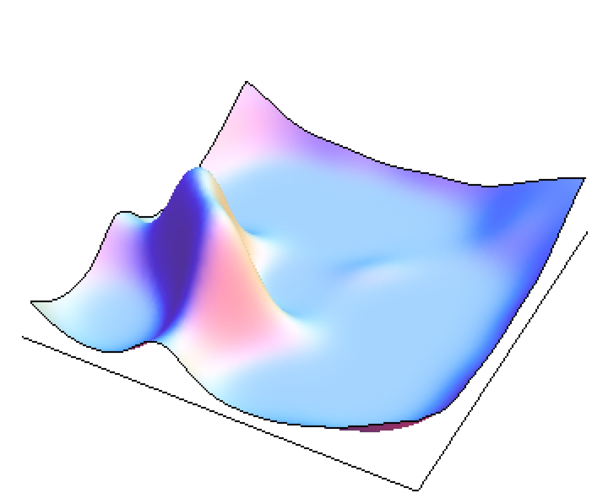
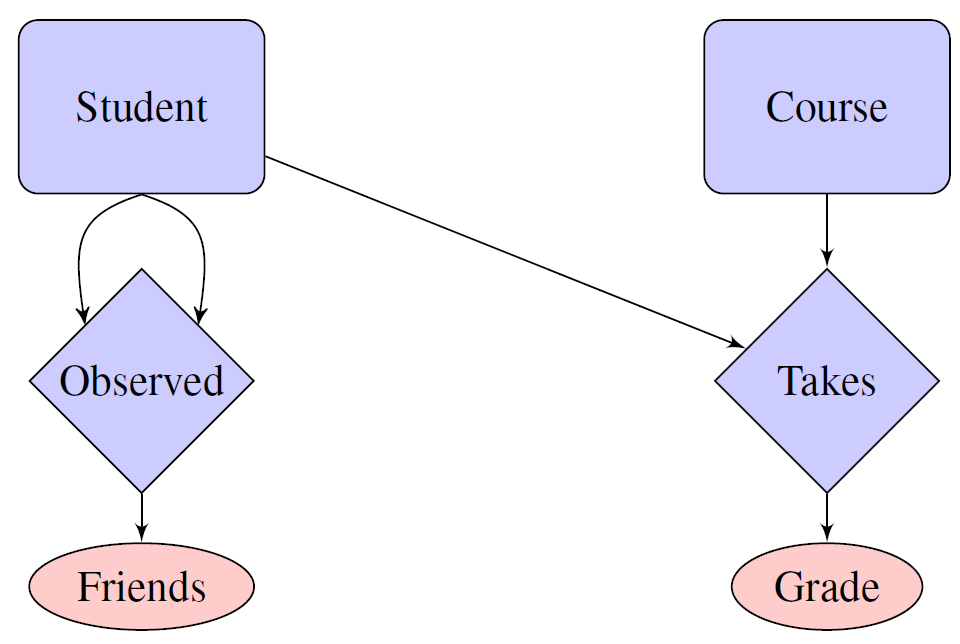
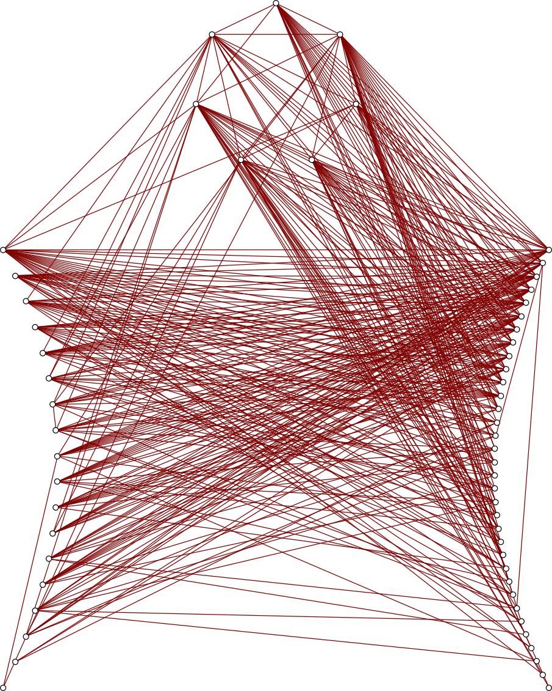

I am studying for a PhD in Machine Learning at the University of Cambridge. My supervisor is Zoubin Ghahramani and my advisor is Carl Edward Rasmussen.
I joined the machine learning group at Cambridge in 2011 after working as a management consultant at the Boston Consulting Group. Before that, I received a B.A. in mathematics and M.Phil in Statistics from the University of Cambridge.
My interests lie in the application of Bayesian and nonparametric statistics to machine learning.

|
GEFCom2012 Hierarchical Load Forecasting: Gradient Boosting Machines and Gaussian Processes James Robert Lloyd To appear, International Journal of Forecasting, 2013 preprint | code | |
|  |
Structure Discovery in Nonparametric Regression through Compositional Kernel Search David Duvenaud, James Robert Lloyd, Roger Grosse, Joshua B. Tenenbaum, Zoubin Ghahramani International Conference on Machine Learning, 2013 pdf | code | poster | bibtex | |
|  |
Random function priors for exchangeable arrays with applications to graphs and relational data James Robert Lloyd, Peter Orbanz, Zoubin Ghahramani, Daniel Roy Neural Information Processing Systems, 2012 pdf | code | poster | bibtex |
|
|  |
Random function priors for exchangeable databases 9th Conference on Bayesian Nonparametrics slides |
|
|  |
Bayesian nonparametric network models: latent space and latent attribute approaches Netsci 2013: Complex Networks meet Machine Learning slides |
|
|
jrl44@cam.ac.uk Cambridge University Engineering Department Trumpington Street Cambridge CB2 1PZ United Kingdom |

|